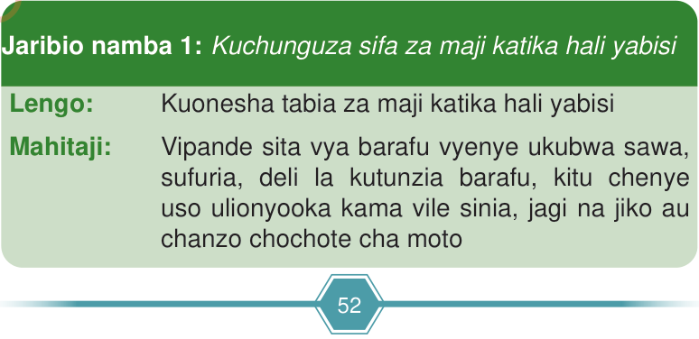

Gesi
Gesi haina umbo maalumu na ni nyepesi zaidi kuliko yabisi na kimiminika. Mfano wa gesi ni hewa. Hewa hutunzwa katika vitu yabisi. Kielelezo namba 3 kinaonesha/kinabainisha maputo yenye hewa. Kadiri hewa inavyojazwa kwenye maputo, ukubwa wa maputo huongezeka.
Kielelezo namba 3 kinaonesha/kinabainisha maputo yenye hewa.
Kuchunguza sifa za maada
Maada inaweza kubadilika kutoka hali moja kwenda hali nyingine. Hali za maada zinategemea mabadiliko ya jotoridi. Majaribio namba 1–4 yatatumika kuchunguza na kubainisha hali tatu za maada kwa kutumia maji.

Jaribio namba 1: Kuchunguza sifa za maji katika hali yabisi
Lengo:
Kuonesha tabia za maji katika hali yabisi
Mahitaji: Programu saidizi na vifaa vifuatavyo:
Vipande sita vya barafu vyenye ukubwa sawa, sufuria, deli la kutunzia barafu, kitu chenye uso ulionyooka kama vile sinia, jagi, jiko au chanzo chochote cha moto, programu saidizi na kipimajoto sauti.